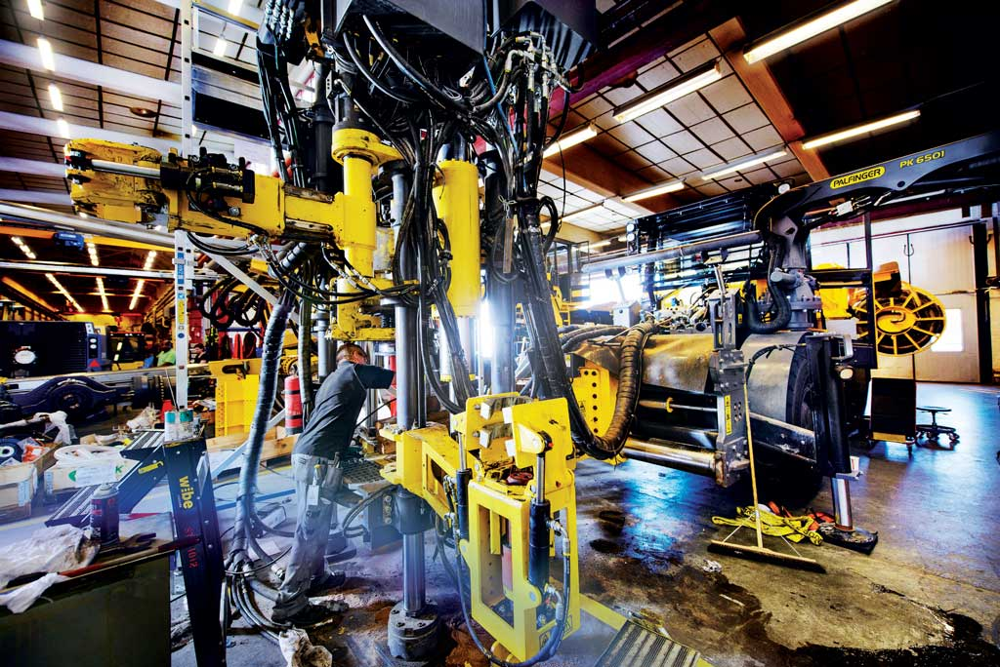

Países con la Mejor Tecnología
| País | Antecedentes | Tecnología |
|---|---|---|
| China | Potencia emergente en tecnología, inversión masiva en I+D
China |
5G, IA, Computación cuántica, Telecomunicaciones

|
| Estados Unidos | Líder histórico en innovación tecnológica
Estados Unidos |
Silicon Valley, Software, Hardware, Aeroespacial

|
| Japón | Pionero en robótica y electrónica de consumo
Japón |
Robótica, Electrónica, Automoción, Semiconductores

|
| Corea del Sur | Infraestructura digital avanzada
Corea del Sur |
Semiconductores, Pantallas, Telecomunicaciones, IoT
|
| Alemania | Excelencia en ingeniería e industria 4.0
Alemania |
Ingeniería, Automoción, Manufactura avanzada

|
| Reino Unido | Centro de innovación en fintech e inteligencia artificial
Reino Unido |
Fintech, IA, Biotecnología, Ciberseguridad
|
| Israel | Startup Nation, líder mundial en innovación per cápita
Israel |
Ciberseguridad, Defensa, Startups, Agricultura tecnológica
|
| Singapur | Ciudad inteligente líder en Asia con fuerte inversión en I+D
Singapur |
Smart Cities, Blockchain, Biotecnología, Fintech
|
| Suecia | Innovación sostenible y liderazgo en telecomunicaciones
Suecia |
Telecomunicaciones, Energía renovable, Gaming, Streaming
 |